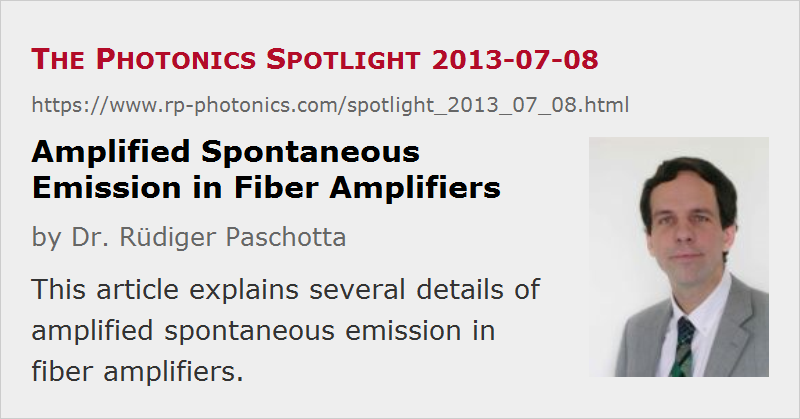

Amplified Spontaneous Emission in Fiber Amplifiers
Posted on 2013-07-08 as a part of the Photonics Spotlight (available as e-mail newsletter!)
Permanent link: https://www.rp-photonics.com/spotlight_2013_07_08.html
Author: Dr. Rüdiger Paschotta, RP Photonics Consulting GmbH
Abstract: This article explains several details of amplified spontaneous emission in fiber amplifiers.

Ref.: encyclopedia articles on amplified spontaneous emission, fiber amplifiers, numerical aperture, noise figure; tutorial on fiber amplifiers, part 4 on ASE
It is well known that amplified spontaneous emission (ASE) is an important phenomenon in fiber amplifiers, which often exhibit a high gain. However, various details in that context are less well known:
Influence of the Numerical Aperture
The amount of ASE power depends on the number of modes of the fiber. If the numerical aperture (NA) of an active multimode fiber is increased, this can increase the number of modes and thus the resulting ASE power for a given amplifier gain. But what if we have a single-mode fiber and increase its NA, but not enough to get into the multimode regime?
One might argue that an increased NA always means an increased acceptance angle, and this should lead to an increased amount of captured light. However, the truth is that the ASE power depends only on the number of modes and their gain. The increased NA may now lead to a better overlap of the guided fiber mode with the active dopant, in that way also to a higher gain, and that indeed leads to increased ASE powers. However, if the overlap was already very high, the increased ASE does not increase the ASE powers further, as long as we stay in the single-mode regime.
Different ASE Powers in Forward and Backward Direction
It is often observed that the ASE powers in forward and backward direction are quite different – but only for gain media with a quasi-three-level behavior. For unidirectional pumping, the counterpropagating ASE is sometimes (but not always) much stronger. How can that be?
Consider a situation where the unpumped end of the fiber, where the pump power is low, exhibits negative net gain (i.e., more absorption than gain). Forward ASE can obviously not profit from passing through that region. For backward ASE, however, that is different: even if the net gain is negative, there is spontaneous emission which acts as a seed for the ASE growing in the other parts of the fiber. Even though that seed is quite week in absolute terms, it can substantially boost the ASE output power.
As an example, I have done a simulation with our software RP Fiber Power. See Fig. 1 for the powers in an ytterbium-doped fiber amplifier pumped at 962 nm, which amplifies a weak signal at 1030 nm. The ytterbium excitation is 59% at the input end, but only 6.3% at the output end. Near that back end, backward ASE (see the dot-dashed curve) rises steeply, although at a very low level; note that −30 dBm are only 1 μW.
It is also instructive to look at the ASE spectra (Fig. 2). Here, one recognizes that in the longer-wavelength region (beyond 1040 nm), there is no big difference between forward and backward ASE powers. In that wavelength region, we essentially have four-level behavior of the ytterbium system. Here, low gain inevitably means low spontaneous emission rates, so that the unpumped end cannot contribute much to the backward ASE. For short wavelengths around 975 nm, however, there is a huge difference of up to about 50 dB. There, we have strong three-level behavior, and the high emission cross section leads to substantial spontaneous emission even when the net gain is strongly negative.
How Much Gain Can We Have?
ASE often limits the achievable gain, as increasing gain means more and more extracted ASE power. How does that gain limit depend on the circumstances?
- For continuous-wave devices, it becomes a problem when the extracted ASE power becomes comparable with the pump power. That is often the case for an amplifier gain above approximately 40 dB, assuming single-mode guidance. Of course, for high-power devices that limit can be a bit higher.
- For a highly multimode fiber, the ASE powers would be larger and thus the gain limit lower. It is not common, however, to use highly multimode gain fibers.
- The gain bandwidth also plays a role, but as different active dopants and fiber core compositions don't change the gain bandwidth that much, that is no particularly important influence.
- For pulsed pumping shortly before a short pulse is amplified, one may tolerate somewhat more ASE. What is relevant then is the extracted ASE energy compared with the energy of the amplified pulse. That lost energy can be reduced by keeping the time between pumping and amplification short.
Signal-to-Noise Ratio
An amplified signal is contaminated by ASE, which implies intensity and phase noise. Some people take a very naive view: they measure the optical spectrum of the output and specify the signal-to-noise ratio as the difference (in decibels) between the signal peak and the ASE background. That difference, however, depends on the measurement bandwidth: a narrow-band signal is always fully transmitted for a sufficiently large measurement bandwidth, whereas the transmitted ASE power grows in proportion to that bandwidth. So the very least is to specify the measurement bandwidth, because otherwise one transmits meaningless specifications.
Another relevant detail is of course what the used peak in the spectrum (which is interpreted as signal) really is. Is it perhaps only a carrier, onto which the actual signal is modulated? Obviously, if that is the case and the signal is 10 dB below the carrier, that must imply a reduced signal-to-noise ratio.
The actual signal-to-noise ratio of an analog receiver, for example, is anyway not the same as the power ratio discussed above. Here, the signal power and noise power also depend on the modulation scheme, also on excess noise of the receiver, so that the calculation of the signal-to-noise ratio is substantially more complicated.
For the optimization of the signal-to-noise ratio, or the amplifier's noise figure, the essential point is to keep the excitation density near the signal input as high as possible. That is actually achieved with forward (copropagating) pumping, where at the signal input we obtain a high pump power. Note that this guideline is valid essentially only for quasi-three-level systems; for a four-level amplifier the noise figure is always near 3 dB, assuming a high amplifier gain and negligible fiber losses. Only if fiber losses were very high, a high excitation level would be important, but that is usually not the case.
This article is a posting of the Photonics Spotlight, authored by Dr. Rüdiger Paschotta. You may link to this page and cite it, because its location is permanent. See also the RP Photonics Encyclopedia.
Note that you can also receive the articles in the form of a newsletter or with an RSS feed.
Questions and Comments from Users
Here you can submit questions and comments. As far as they get accepted by the author, they will appear above this paragraph together with the author’s answer. The author will decide on acceptance based on certain criteria. Essentially, the issue must be of sufficiently broad interest.
Please do not enter personal data here; we would otherwise delete it soon. (See also our privacy declaration.) If you wish to receive personal feedback or consultancy from the author, please contact him e.g. via e-mail.
By submitting the information, you give your consent to the potential publication of your inputs on our website according to our rules. (If you later retract your consent, we will delete those inputs.) As your inputs are first reviewed by the author, they may be published with some delay.
|  |
If you like this page, please share the link with your friends and colleagues, e.g. via social media:
These sharing buttons are implemented in a privacy-friendly way!